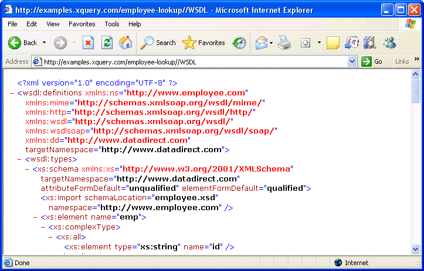

Generating WSDL
XQueryWebService automatically generates a Web Service Desctiption Language (WSDL) document based on the XQuery in your Java servlet container's XQuery directory. The WSDL document describes the services that are exposed by a given XQuery. This information can be useful if you plan to provide programmatic access to one or more of those services.

To take a look at the WSDL document generated – in real-time – for the Employee Lookup example, click here:
http://examples.xquery.com/employee-lookup/WSDL
If we take a closer look, we see that the WSDL document defines a single service (
<wsdl:service>), exposed through two ports: SOAP and HTTPGET.Each query is exposed as a WSDL operation (
<wsdl:operation>), with each query's external variables exposed as operation parameters. Further, all built-in schema types are preserved in the parameter declaration.Consider the following external variable declared in our example XQuery:
The following global element appears in the
<wsdl:types>section of the generated WSDL document:<xs:element name="emp"> <xs:complexType> <xs:all> <xs:element name="id" type="xs:string"/> </xs:all> </xs:complexType> </xs:element>The input message references the global element,
"emp":Currently, XQueryWebService does not support user-defined types for external variables.
Next Steps
You can use a WSDL document to create a set of classes that can be used to manipulate the data service as if it was a local library. Learn more about using WSDL service references in the next section.